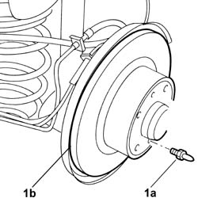

3310B52 REAR BRAKE DISCS - R+R WITH BRAKE CALIPERS REMOVED
- Path
- Procedures > 33 BRAKES > 3310 DISC BRAKES > 3310B REAR DISC BRAKES > 3310B52 REAR BRAKE DISCS - R+R WITH BRAKE CALIPERS REMOVED
- Kind
- repair procedure (removal / refitting; the operation number is the code)
- Applies to
- all engines; all production periods
- Interactive page
- https://sloeber94.github.io/elrnDB-fUlss/en/#/179007293
Applies to: all engines; all production periods
 Removing
Removing
 Refitting
Refitting1. Undo the brake disc fastening pins (1a) and remove the brake discs (1b).

Applies to: all engines; all production periods
Refitting
Removing- Position the rear brake disc and tighten the fixing pin.